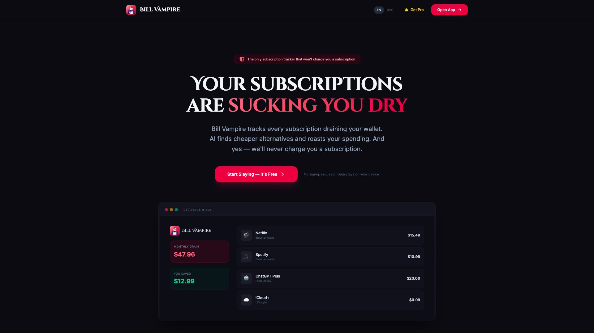

While building "one brief, eleven platforms," I did something I wouldn't have dared attempt a year ago — I shipped the first version of the entire interface in a single afternoon. Sidebar, cards, empty states, button copy, all AI-assisted, all looking the part. A few years ago, that same screen set would've eaten a week of my time.
Then I hit "generate," and the model handed me back half a dataset with a broken structure. The interface was still screenshot-perfect. But the user had no way to tell which cards to trust, or which failed result meant "regenerate this one" versus "scrap the whole batch and start over."
That's the moment I lost all interest in the question "will AI replace designers." It's aimed at the wrong thing. The question worth chewing on is: now that "drawing the page" gets cheaper every day, what exactly am I getting paid for?
Screens are going to keep getting cheaper — that tide isn't turning. But designers were never really selling the screen. We were selling "knowing which problem to solve, having the stomach to cut what doesn't fit, and proving the call didn't hurt the user." AI doesn't want that work, and it can't carry it.
Once "drawing it" gets cheap, here's what actually rises in price
The answer lives inside the Signals project. Scientists need to trace a path from an experiment record all the way back to the recommended material. What made the old flow unbearable? Information was scattered across several objects and pages, and the user had to manually stitch the lineage together, one hop at a time. So this time we didn't write the goal as "rebuild a cleaner experiment list" — that's a metric designers tell each other; users couldn't care less. We pinned it to one concrete task: can the user get from an experiment result to the source material, faster.


In usability testing, the same tracing task dropped from roughly two hours to forty minutes — about 66% saved. Let me pin one sentence to that number before anything else: it's the result of one specific test task. It does not mean "design lifted the business by 66%," and it is not the average efficiency of every user in production. But stating the measurement this tightly is exactly what shows what design actually did this round — it compressed "scientist hunts for material" from a two-hour grind into a motion you finish without thinking.
Decision 01 · Move the metric off "pages" and onto "tasks"
- The easy version to report
- Count how many pages shipped this round, or the component reuse rate. Numbers look great; nobody is actually moved.
- The question that matters
- Can the scientist complete the trace? Where exactly does he lose his way — which link in the relationship is missing?
- The design call
- Re-organize the information around materials, experiments, and lineage. A table looking nice is a quick fix; the hard part this round was the relationships between pieces of information.
- The boundary
- The result comes from that one task test only — don't dump every later business change onto design's tab.
AI is great at manufacturing "success screenshots." Products live in the failures.
The easiest deliverable for a generative product is a "success screenshot": type one sentence, get a beautiful result, capture it, ship it, done. But a real product lives inside timeouts, format drift, sources that contradict each other, quota running out, users changing their mind. Early in "one brief, eleven platforms," I made a mistake so textbook it hurts — whenever the model errored, I had the system quietly inject a template and fill the result so the Demo never broke stride.
Beautiful, truly. But that beauty was stolen.
Later I deleted the whole safety net. Every channel now shows its own status: preparing, generating, checking, failed, retrying. Successful content stays; failed content explains why. That decision made my demo less perfect for the first time — and made the product trustworthy for the first time.

Not a single prompt can decide, on the team's behalf, where accountability gets drawn. Engineering can tell me which errors are catchable; product can define the cost of a retry; what design has to do is translate those constraints into states a user can read. What gets handed over is a set of rules for "something went wrong, and the person can still keep working" — and you can't assemble those rules by stacking error pages.
A system that dares to say "I don't know" is worth more than one that never stops talking.
AI output carries a built-in fluency. The smoother the sentence, the more readily the user takes it as fact and files it away. So Guardrail staring only at tone isn't enough — it also has to separate three things cleanly: facts already provided, the model's inferences, and what still needs a human to confirm. For things like pricing, performance, or customer stories, if there's no source backing it, the interface does not get to slap a green checkmark on it and manufacture the feeling of "this is settled."

What the designer is doing here, at its deepest, is an epistemic job: what evidence did the user see, and how much certainty rises in their mind? A source link, a warning color, an editable field, an "unverified" tag — each quietly shifts how much they're willing to believe this result. Holding the design rights to that feeling of certainty is worth far more than writing a prettier sentence.
Visual didn't die. It got demoted from "the answer" to "the entry ticket."
Let me get one thing straight: I genuinely dislike people using "strategy" to step on visual. On a complex B2B product, once the hierarchy is tangled or the density runs off, no amount of correct process will make it fast. The value of UnifyUX is exactly in turning color, type, components, and usage rules into one shared language the whole team can speak — so several products don't have to reinvent basic interactions from scratch every time.

But AI is going to keep pushing the cost of "building basic pages" all the way to the floor. The role of the design system shifts forward with it: from "giving people components to copy," to setting the rules for people and models at the same time. Naming, states, content rules, accessibility notes — these will become worth far more than a polished component overview shot. The entry ticket called visual, anyone will be able to buy. The person who stands above the ticket and sets the rules clearly — that's the one who's actually irreplaceable.
The most expensive judgment is usually hiding in "why would the user pay."
A product can be perfectly usable and still not survive. When "one brief, eleven platforms" reached the pricing page, it backed me into a corner and forced me to answer the most fundamental question: is the user paying for "how many items it can generate," or paying for "fewer errors, a brand voice that stays consistent, control over the publishing cadence"? Chasing the former, you slide into a token-resale game where whoever's model is cheapest wins. The latter is what actually needs a whole real workflow holding it up underneath.
Bill Vampire knocked me on the head once about this too. A product that wants to charge can't have a landing page that only aims to look cool — it has to speak plainly to the user about authorization, data boundaries, evidence of value, and what paying gets you. If the designer insists on waiting for the requirements doc to be complete before drawing the page, they've essentially missed the most critical value definition — by the time the screens are done, the business logic has already been decided by someone else.

These are the five questions I run every project through now
If you strip the polished mockups out of a project and I can still articulate these five things, then the project wasn't wasted:
- Task: which step was the user actually stuck on — the one that ate the most time, broke the most often, lost them the fastest?
- Trade-off: which usable options were on the table, and why did I cut the other two?
- System: which roles, which states, which downstream steps did this decision disturb?
- Evidence: which results were actually measured, and which are just my judgment?
- Accountability: when something goes wrong, how does the product explain it, how does it let the person recover, how does it hand control back to the user?
AI can help me generate options, find edges, fill in code, rewrite copy — I'm happy to use all of it. The faster it gets, the more I have to pour the time it saves into these five questions. Otherwise I've just traded for a sharper knife to cut a pile of pages nobody wanted.
Upgrade a single screen into a piece of product evidence
- Before the screenshot, write one sentence: what task is the user trying to complete right now?
- Mark one failure state — don't only show the best-looking happy-path frame.
- Write down which option you cut, and the cost of cutting it.
- Label the result with what was measured, the sample size, or honestly tag it "unverified."
- Say which team rule this screen changed — not just which visual it changed.
- Signals case study: tracing tasks, recommended materials, and lineage design.
- Finfold case study: workbench, agent states, Guardrail, and billing.
- UnifyUX case study: design system and component language.